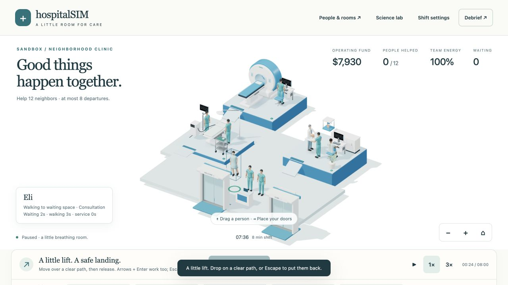
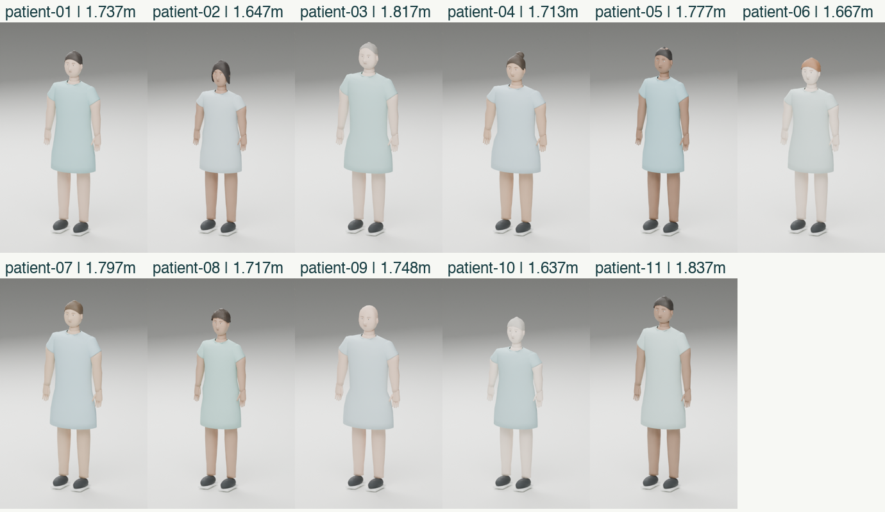
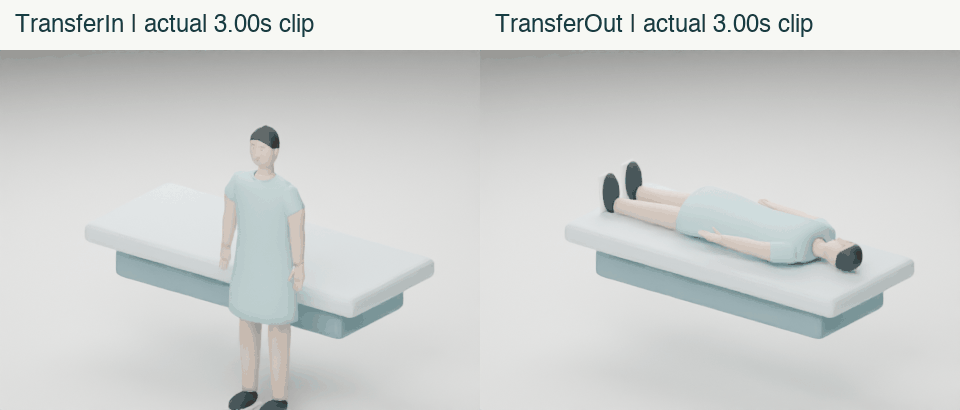
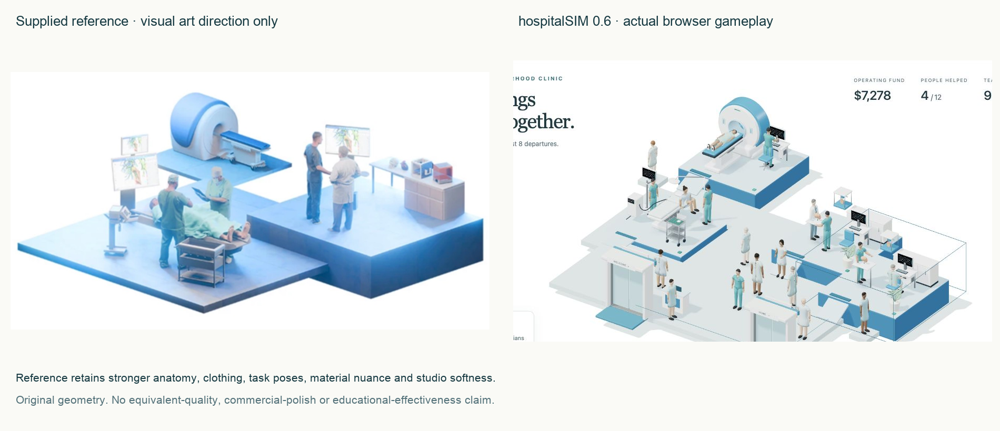

hospitalSIM0.6: drag a floor patient or idle clinician to lift them. Drop on a clear path, or Escape to cancel. The inspector and keyboard provide alternatives. Place Entrance doors and Exit doors on a connected outside edge; new journeys visibly cross the sliding portals.
Actual browser gameplay at3×, seed431. Eli arrives at00:19 and leaves through the exit at02:24 after consultation, optional imaging and care. All125elapsed game seconds are classified exactly once. Recorded visit and deterministic replay evidence.

Bounded procedural joint sway on the original rig; not physics ragdoll simulation. Holding pauses time. Visits and queue priority survive a valid drop.

Original Blender geometry, skinning, nine clips and39joints per model. No ripped or purchased characters; substantial AI assistance. Appearance changes no gameplay ability.

Separate drape retracts before exit. Authored motion and approximate soft contact, not cloth or body physics. Actual asset checks.

The reference remains stronger in anatomy, folds, task hand contact, material nuance and studio softness. No equivalent-quality, superiority or production-readiness claim. Actual iPhone calibration and external player/educator testing remain pending.
Measurements, tests and limitations · Source and model record